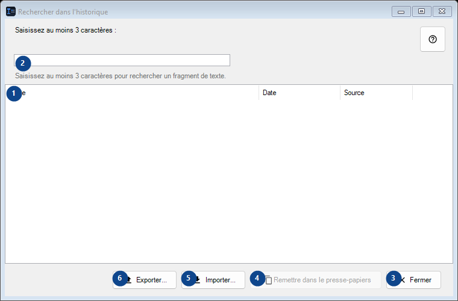
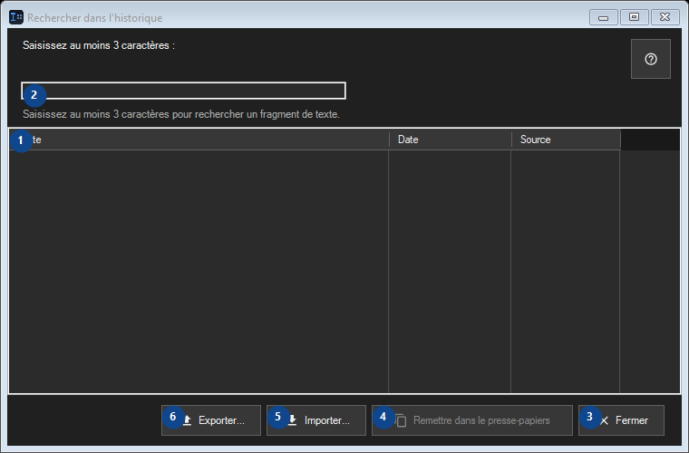

Rechercher dans l'historique
À quoi cela sert
L'historique est stocké uniquement en local et chiffré avec Windows DPAPI pour votre compte.


Ordre des actions
Lisez les explications numérotées, choisissez les valeurs voulues, puis continuez avec la commande de la fenêtre.
Éléments
1. Éléments
Cette zone affiche le contenu ou l’état actuel. Sélectionnez une entrée pour l’utiliser. Texte / Date / Source
Vos raccourcis2. Saisissez au moins 3 caractères :
Choisissez ou saisissez la valeur indiquée par le libellé voisin. Vérifiez-la avant de continuer.
Vos raccourcis3. Fermer
Utilisez cette commande pour l’action indiquée. Lisez toute confirmation avant de l’accepter.
Vos raccourcis4. Remettre dans le presse-papiers
Utilisez cette commande pour l’action indiquée. Lisez toute confirmation avant de l’accepter. Cet élément est indisponible. Activez d’abord sa fonction ou sélectionnez une entrée.
Vos raccourcis5. Importer...
Utilisez cette commande pour l’action indiquée. Lisez toute confirmation avant de l’accepter.
Vos raccourcis6. Exporter...
Utilisez cette commande pour l’action indiquée. Lisez toute confirmation avant de l’accepter.
Vos raccourcis